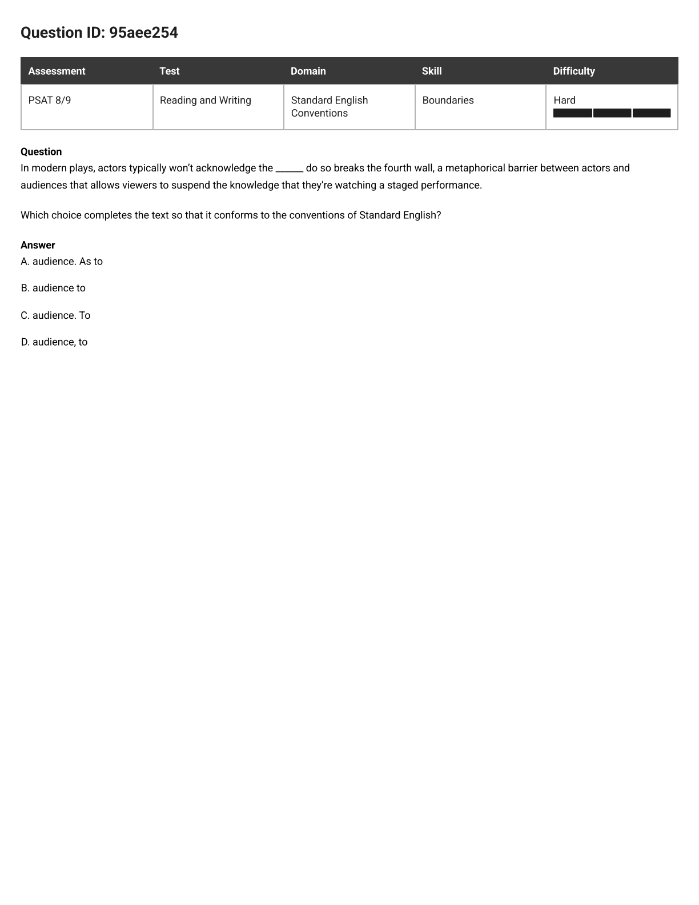
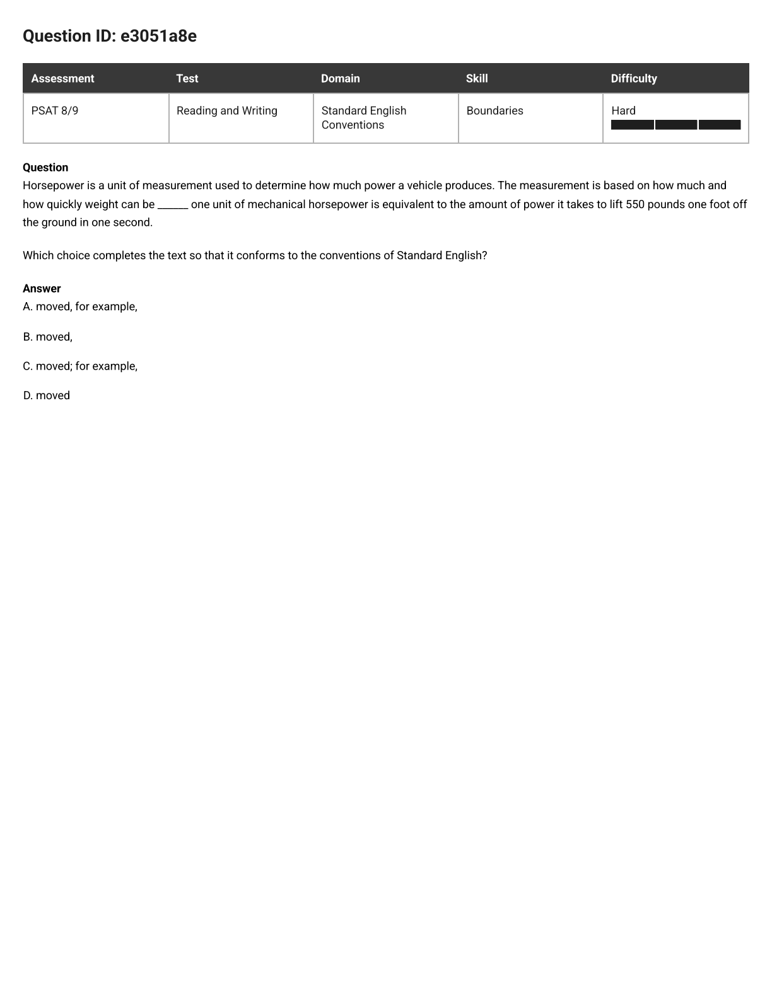
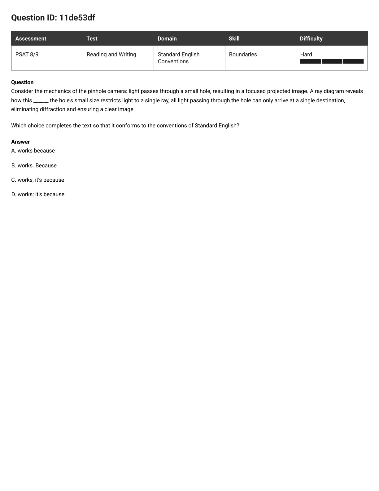
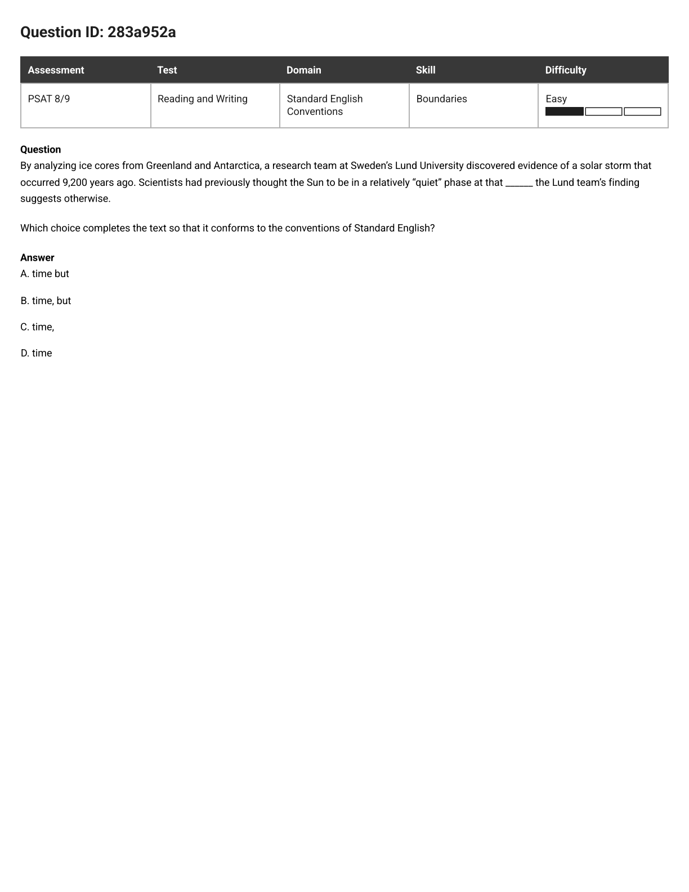
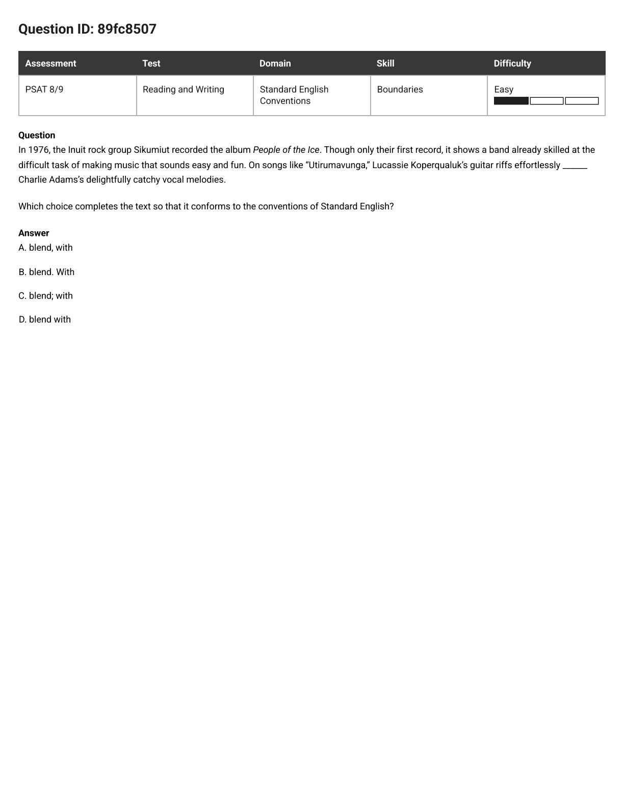
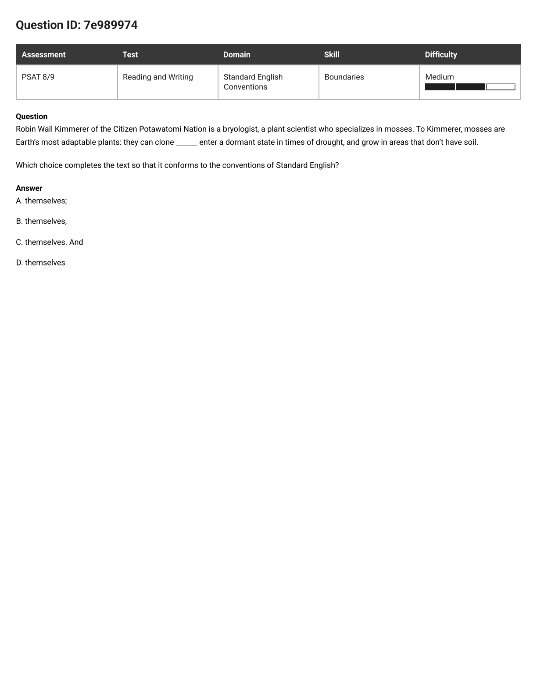

PSAT 8/9 · Boundaries · 5 missed questions, one rule
Every Boundaries question hands you the same stretch of words with four different punctuation marks and asks which one is legal. Three of these five answers were a full stop — the mark your ear least wants to drop into the middle of a thought. Punctuation between clauses is not a feeling. It has exactly two inputs, and you can check both in about eight seconds.
Thumb over the underline. Read the sentence past it, all the way to the final period, as if the punctuation weren’t there yet. You are reading for structure, not for meaning — the topic is always decoration.
Draw a line where the blank is. You now have exactly two things: a left piece and a right piece. Every Boundaries question in the whole test is a question about these two pieces and nothing else.
Watch for the little word riding along with the mark. Some choices sneak in an extra word — as, because, and, it’s — and that word changes what the piece is. Same mark, different sentence.
One question per piece: could I text this by itself without sounding unhinged? In grammar terms, it needs a subject, its own verb, and nothing stuck on the front that spoils it. Mark it S for whole sentence or P for piece.
Now it is pure lookup. Find your combination, read off the legal marks, and cross out every choice that isn’t one of them.
| Mark at the blank | Legal only when | Break it and you get |
|---|---|---|
| . period | S | S | Chopped |
| ; semicolon | S | S | Chopped, or Overkill |
| : colon | S | what the left side promised | Chopped |
| , and · , but · , so | S | S | Fused |
| , comma alone | S | P or P | S | Comma splice |
| no mark at all | the two pieces are one sentence | Fused |
Subject actors, verb won’t acknowledge, nothing stuck on the front. S.
Subject To do so (= "doing that"), verb breaks. S.
Eight seconds, no opinions, no reading aloud. That is the entire skill.
Splice. A lone comma holding two whole sentences together. Illegal every single time, with no exceptions — and it is almost always the choice that sounds most natural out loud.
Fused. Nothing at all at a boundary that needed something. Two sentences crashed together, or a list item glued to the next one. Reads fast and breathless.
Chopped. A period or semicolon dropped somewhere that strands a piece: "And enter a dormant state." "As to do so breaks the fourth wall." A capital letter and a full stop do not make a fragment into a sentence.
Overkill. A heavy mark shoved between things that were never two sentences — items in a plain list, or a phrase hanging off the verb. Punctuation you reached for because you’d been burned by commas.

The question as it appeared
In modern plays, actors typically won’t acknowledge the ______ do so breaks the fourth wall, a metaphorical barrier between actors and audiences that allows viewers to suspend the knowledge that they’re watching a staged performance.
Which choice completes the text so that it conforms to the conventions of Standard English?
In plain words: can "To do so breaks the fourth wall" stand up by itself? If it can, the mark in front of it has to be a hard one.
Thumb over the blank. Left piece: In modern plays, actors typically won’t acknowledge the audience. Right piece: to do so breaks the fourth wall, a metaphorical barrier… staged performance.
Left: subject actors, verb won’t acknowledge. Post it on its own and nobody blinks. S.
Right is the one people get wrong, because it starts with to. But "To do so" is the subject here — swap in "Doing that" and you can hear it: Doing that breaks the fourth wall. Subject plus verb breaks. S.
S | S allows a period, a semicolon, a colon, or a comma plus one of the FANBOYS. Now scan the four choices for anything on that list. B has no mark. D has a bare comma. A has a period — but look what it drags along. Only C is clean.
C — audience. To
Step 2 did the work. Once you label the right piece S, the table hands you the answer without a single judgement call.
T3, Chopped. The period is the right mark; the smuggled-in As destroys it. "As to do so breaks the fourth wall…" — stick a subordinator on the front and the S becomes a P, and now you have given a fragment a capital letter and a full stop. Always check the extra word, not just the punctuation.
T2, Fused. Nothing between two whole sentences. It also reads as if the actors won’t acknowledge "the audience to do so," which isn’t a thing anyone could mean.
T1, Splice. Sentence, comma, sentence. This is the smoothest one to say out loud, which is exactly why it is on the page. A comma is what a short pause feels like; a short pause is not a rule.

The question as it appeared
Horsepower is a unit of measurement used to determine how much power a vehicle produces. The measurement is based on how much and how quickly weight can be ______ one unit of mechanical horsepower is equivalent to the amount of power it takes to lift 550 pounds one foot off the ground in one second.
Which choice completes the text so that it conforms to the conventions of Standard English?
In plain words: cross out "for example" and nothing changes — you still have two whole sentences bumping into each other.
Left piece: The measurement is based on how much and how quickly weight can be moved. Right piece: one unit of mechanical horsepower is equivalent to the amount of power it takes to lift 550 pounds one foot off the ground in one second.
Left: subject The measurement, verb is based. S. Right: subject one unit of mechanical horsepower, verb is. S. The right piece is long, but length is not the test — it has one subject and one main verb, so it is one sentence.
S | S needs a period, semicolon, colon, or comma + FANBOYS. Read the four choices again: comma, comma, semicolon, nothing. Three of them are off the table before you have thought about horsepower at all.
C — moved; for example,
Step 4 did the work: with S | S there were only four legal marks in the universe, and exactly one of them was printed on the page.
T1, Splice — in disguise. The words for example make your eye think a join has happened. Cover them: "…weight can be moved, one unit of mechanical horsepower is equivalent…" Two sentences, one comma. Dead.
T1, Splice — undisguised. Same crime with no costume on. If you can spot B you can spot A; they are the identical error.
T2, Fused. No mark at all between two main clauses. This is the choice that feels quickest to read, and "quick to read" has never once been the rule.

The question as it appeared
Consider the mechanics of the pinhole camera: light passes through a small hole, resulting in a focused projected image. A ray diagram reveals how this ______ the hole’s small size restricts light to a single ray, all light passing through the hole can only arrive at a single destination, eliminating diffraction and ensuring a clear image.
Which choice completes the text so that it conforms to the conventions of Standard English?
In plain words: there are two boundaries in this sentence, not one. Your choice has to make both of them legal.
The blank sits after "A ray diagram reveals how this ______". But run your finger along to the full stop and you will hit a second boundary that is already punctuated:
That comma is printed on the page. Nobody is offering to change it. So whichever choice you pick has to leave that comma sitting somewhere legal.
Right of it: all light passing through the hole can only arrive at a single destination — subject all light, verb can arrive. S, and that never changes whatever you pick.
Left of it: this is what the choices are secretly deciding. "the hole’s small size restricts light to a single ray" is an S on its own — unless a subordinator gets attached to its front, which turns it into a P.
B ends the first sentence at "works" and starts a new one with Because. Now the far comma separates an opening P from the main clause that follows it — Because the hole’s small size restricts light to a single ray, all light … can only arrive at a single destination — which is the ordinary, legal comma you see after every "Because…" opener in English.
| Choice | At the blank | At the far comma |
|---|---|---|
| A · works because | fine (no boundary) | S | S — Splice |
| B · works. Because | S | S — period ✓ | P | S — comma ✓ |
| C · works, it’s because | S | S — Splice | S | S — Splice |
| D · works: it’s because | colon ✓ | S | S — Splice |
B — works. Because
Step 1 did the work — the "read to the full stop" habit. Everyone checks the blank; this question is won by checking the comma that was already there.
T1, Splice at the far comma. Here because is used up attaching to "reveals how this works," so it is no longer available to soften the second half. That leaves "…restricts light to a single ray, all light … can only arrive at a single destination" — two main clauses, one comma.
T1, Splice — twice. The comma at the blank joins two sentences, and the far comma joins two more. A choice can be wrong in two places at once; you only need to find one.
T1, Splice at the far comma — the real trap of this set. The colon is genuinely fine: the left side is a finished sentence and the right side delivers the explanation it promised. So you fix the boundary you were looking at, feel good, and move on — while "it’s because…" quietly created a main clause and left the far comma holding two sentences together. One boundary fixed, one boundary broken.
Same four steps every time: cover, split, label S or P, look at the table. Say the two labels out loud before you look at the choices. The last one is the reverse case — the one where the comma is right.
25273a8d · Hard · the Flying Cloud record run
On July 23, 1854, a clipper ship called the Flying Cloud entered San Francisco ______ left New York Harbor under the guidance of Captain Josiah Perkins Creesy and his wife, navigator Eleanor Creesy, a mere 89 days and 8 hours earlier, the celebrated ship set a record that would stand for 135 years.
Which choice completes the text so that it conforms to the conventions of Standard English?
B — Bay. Having. LABEL did the work, and the trick is the word having. An "-ing" word on its own is never the verb of a sentence, so "Having left New York Harbor … earlier" is a P — but keep reading and you find the real verb: the celebrated ship set a record. So the right piece is an opening P bolted onto an S, which together make one whole sentence. S | S → period.
C is a Splice. D is Fused. A is also Fused by table row 4 — the FANBOYS row says , and, and the comma isn’t optional decoration; it is half the mark.
283a952a · Easy · the 9,200-year-old solar storm

By analyzing ice cores from Greenland and Antarctica, a research team at Sweden’s Lund University discovered evidence of a solar storm that occurred 9,200 years ago. Scientists had previously thought the Sun to be in a relatively “quiet” phase at that ______ the Lund team’s finding suggests otherwise.
Which choice completes the text so that it conforms to the conventions of Standard English?
B — time, but. PICK did the work — table row 4. Left: Scientists had previously thought… (S). Right: the Lund team’s finding suggests otherwise (S). S | S, and the only hard mark on offer is the comma + FANBOYS combination.
A is Fused — but without its comma can’t join two sentences. C is a Splice. D is Fused with nothing at all. Notice that A and B differ by exactly one character, and that character is the answer.
89fc8507 · Easy · Sikumiut, People of the Ice

In 1976, the Inuit rock group Sikumiut recorded the album People of the Ice. Though only their first record, it shows a band already skilled at the difficult task of making music that sounds easy and fun. On songs like “Utirumavunga,” Lucassie Koperqualuk’s guitar riffs effortlessly ______ Charlie Adams’s delightfully catchy vocal melodies.
Which choice completes the text so that it conforms to the conventions of Standard English?
D — blend with. LABEL did the work. The right piece is with Charlie Adams’s … vocal melodies — a prepositional phrase with no subject and no verb. That is a P, and it is not an optional add-on: blend needs it to finish the thought. The two pieces are one sentence, so the bottom row of the table applies — no mark at all.
B and C are Chopped: "With Charlie Adams’s vocal melodies." is a fragment however you dress it. A is Overkill — a comma parked between a verb and the phrase it needs. Your ear wants a breath after effortlessly; the table doesn’t care.
7e989974 · Medium · the reverse case — where the comma wins

Robin Wall Kimmerer of the Citizen Potawatomi Nation is a bryologist, a plant scientist who specializes in mosses. To Kimmerer, mosses are Earth’s most adaptable plants: they can clone ______ enter a dormant state in times of drought, and grow in areas that don’t have soil.
Which choice completes the text so that it conforms to the conventions of Standard English?
B — themselves, and this one is the reverse of everything above. LABEL did the work again: the right piece is enter a dormant state in times of drought — no subject of its own, because it is still borrowing they can from the front. P. And the third comma later in the sentence gives the game away: clone themselves, enter a dormant state…, and grow in areas… is a plain list of three things mosses can do.
A is Overkill — a semicolon can’t separate items in a simple list. C is Chopped: "And enter a dormant state in times of drought." has no subject. D is Fused: the list needs its comma. The point: nothing here got safer by being stronger. Count the sentences first, and let the table pick.
stretch · retry in the app
Twelve hard Boundaries questions you have already got right. Do them again with the four steps said out loud — the goal is not the answer, it is being able to name the label on each side before you look at the choices: 08241402 11056467 26fa7d61 436cccf5 566fac8d 5e97e5a9 5ed15c24 6e103ce0 7ac9793d c2a8dd7d e9fa6976 fa821b89.